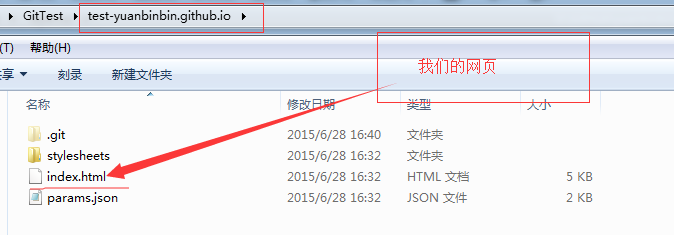
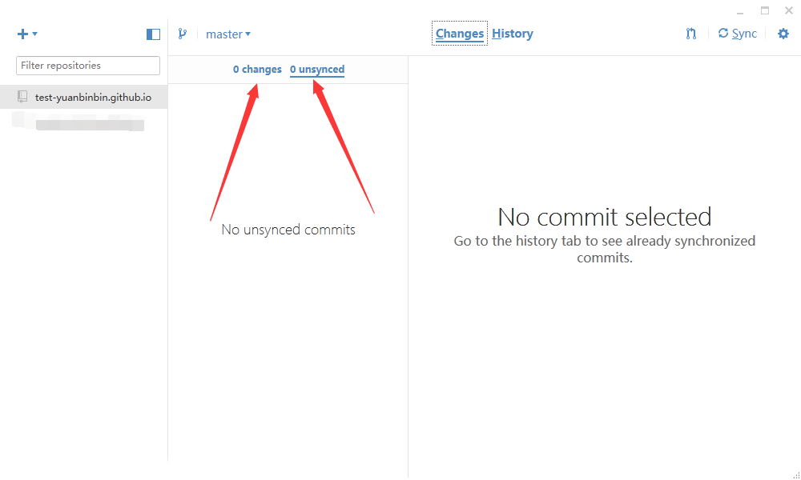

自定义自己的博客
关键词： GitHub , 个人博客，自定义，custom
duang!! binge来也！！！
昨天我们已经创建好自己的blog，今天我将介绍如何自定义我们的blog，废话不多说，Let's Go！！！
1. 前导篇
昨天我们新建的blog，其实是一个代码仓库，由git替我们管理，现在我们要管理自己的仓库，将自己写好的网页存入仓库中，就需要我们与git进行通信，既然我们创建的是仓库，仓库肯定有门的啦！那我们肯定得需要一把钥匙进入仓库，要不然别人也就可以管理你的仓库了！你妹那还怎么愉快的玩耍？因此我们需要在本地创建密匙，也就是ssh（其实我也不懂！！），通过github上传给git，然后我们就可以不用通过github直接与git通信啦！！ 有过git经验的人，肯定知道用dos与git进行通信，但是辣么长的代码，我可记不住啊！那可怎么办啊？好在GitHub跟我们提供了桌面化的管理软件，不仅不用代码连接仓库，连密匙都会帮我们自动生成，并上传，极大的方便了我们！GitHub is so cool！！2. 下载与安装篇
通过上面的介绍，我们需要下载一个小巧但是功能强大的辅助软件。因为binge是个穷人，所以没钱买到高大上的mac，又因为自己技术有限用不了Linux，所以我只能介绍Windows版的给大家，首先让我们先下载下来吧！ 我是传送门，快来点我！！ 第一步：点击上面的连接后进入下载页面，点击下图绿色按钮进行下载。 如果出现无法显示此网页或访问缓慢，是因为GitHub被我天朝墙了，请耐心等待，我大天朝的局域网在逐步完善哈！！当你发现只有660.09KB是不是内心笑开了花，内心是不是在窃喜果然很小巧？But binge只能无奈的告诉你，You Are Wrong！！他只是个下载器！！仅仅是下载器而已！！艰难的下载完后，它是一只紫色的小猫猫，so 卡哇伊！双击它进行下载安装，将会出现下面的界面。 稍等片刻将进入下面的界面，点击Accept按钮，进入下一步。 稍等正在下载并安装 ，进入下一步。 如果你很幸运，那很快就会下载并自动安装完，然而我并不是那个幸运儿！ 竟然报错了，如下图。 An error occurred attempting to install GitHub(在尝试安装GitHub时发生一个错误！)点击Details让我们看看详细内容。An error occurred trying to download'http://github-windows.s3.amazonaws.com/GitHub.application'. （尝试从指定网站下载时发生错误！） See the setup log file located at 'C:\Users\ADMINI~1\AppData\Local\Temp\VSDEB5E.tmp\install.log' for more information.（进入C盘里的一个文件夹下的日志查看详细信息！）好的，那我们就去看看到底是什么错误！！打开文件后看到下图内容。 前面的一大堆说明“Microsoft .NET Framework 4.5 (x86 and x64)”这个已经下载并安装完成了，下滑文档到最后，发现一个Error，从'http://github-windows.s3.amazonaws.com/GitHub.application'.下载错误！！那我们在浏览器打开这个网址到底是个啥！！ 竟然出现个下载界面！（如下图）好的，先下载下来，在说！！！ 下载下来，竟是这么个东西！！（下图），双击他试试！你妹啊！又回到开始了！ 这可怎么办！不下载 下来，怎么开展下一步！！！还好binge机智，\(^o^)/，自己不会，可以百度啊！百度大神还有的！经过百度知将http改为https就好了！那我们试试吧！！嘎嘎.... 你妹啊！还是不行，擦，百度果然坑啊，binge灵机一转，是不是因为GitHub被墙了的原因呢？好的，那我翻墙试试！不会翻墙的童鞋，请点我！！让我们重新双击我们的小猫猫。出现下图界面，好的，点击Install安装！ 进入下载界面，45.2MB有点多啊！！还是耐心的等待吧！！

3. 登录与下载仓库篇
在登陆界面，填写完账户和密码后，点击login进行登录 验证完成后将进入主页面，如下图，简介的界面令我深深着迷！！点击左上角的加，如下图，从云端将仓库克隆进我们的电脑里！！ 点击clone，选择我们要克隆的仓库，然后点击底端的clone，然后选择你要克隆进的文件夹，即可成功！如下图！ 至此，我们已经成功将仓库从云端克隆进我们的电脑里了！！4. 修改代码与上传仓库篇
下载完成后，主页面将显示我们的仓库名称如下图所示！ 现在我们该看看我们仓库的结构了！如下图所示，其中的index.html就是我们的主页了，我们将自己写好的网页替换掉这个文件，再上传到云端，成功后就可以显示我们自己的网页了！！
将自己的网页代替默认网页后 （注意该网页用到的图片以及css都要传进去），GitHub的主页面将变为下图，写好相关信息提交给GitHub，（注意！！这里仅仅是提交给本地，让GitHub记录此次提交）
提交完本地GitHub后，点击右上角的Sync，提交给Git
稍等片刻，当恢复为0时！恭喜你已经上传成功啦！！！！如下图

现在让我们打开我们的网页好好欣赏欣赏吧！！
我们的网页，点我！！！
介绍到这里，我们已经把如何将我们写的网页发布到Git做了详细的介绍，恭喜你！拥有了属于自己的网站！
是时候说再见了，最有不舍，但这篇文章已将我想说的全部表述出来了！我们下一篇文章再见！！让我伴随着你们的掌声，华丽丽的离开！！！！！